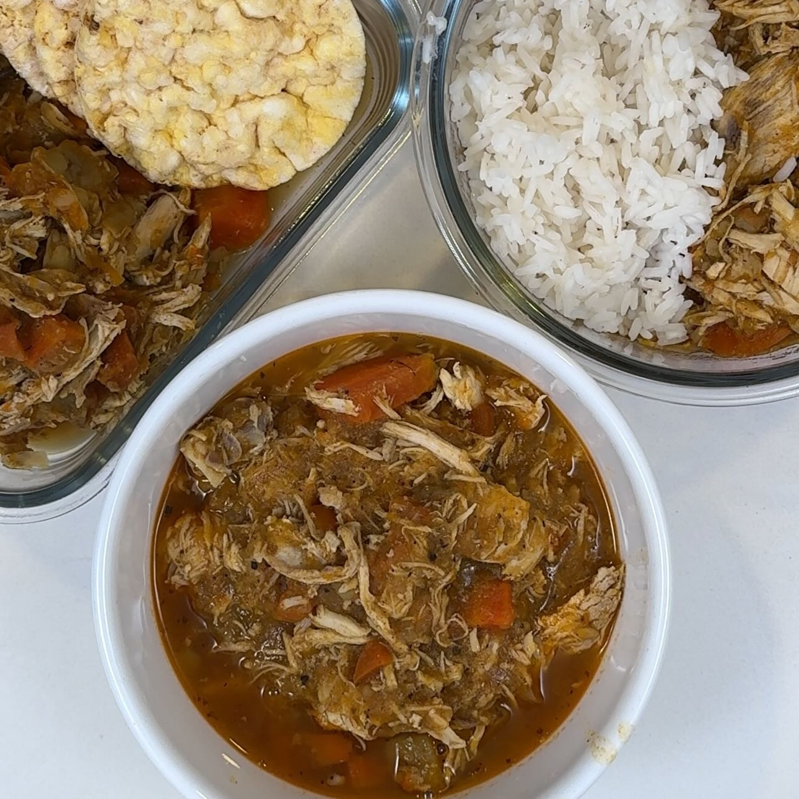

Pollo con Vegetales
Ingredientes:
* Necesita Olla express
- 2 pechugas de pollo
- 1 cebolla
- 300 g zanahoria
- 300 g calabaza
- 300 g papa
- Sal
- Pimienta
- Ajo
- Paprika
- Laurel
- Curcuma
Instrucciones:
- Coloca a saltear con aceite una cebolla. 300 g zanahoria, 300 g calabaza y 300 g papa,
- Condimentar con sal, pimienta, ajo, paprika, laurel y curcuma
- Revolver y añadir las 2 pechugas de pollo enteras
- Cocina por 45 mins, y ahora si, quita el cuero y hueso de las pechugas para después desmenuzar
- Revolver bien todo y servir al gusto